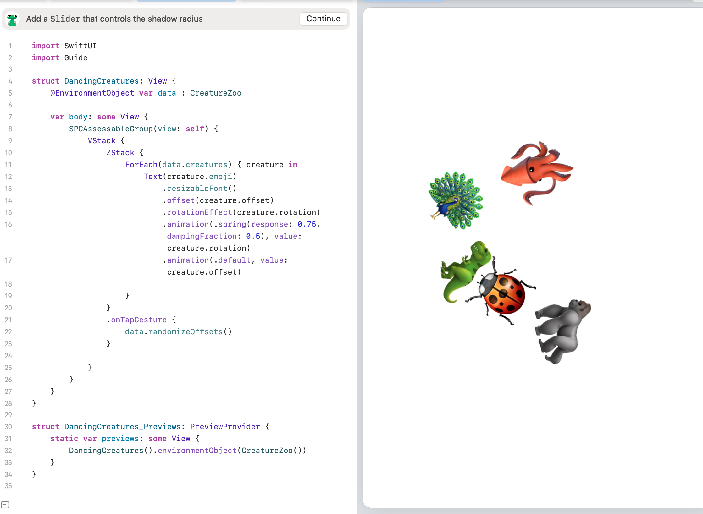

Sean Gordon's Portfolio - Unit 3
This page showcases work from Unit 3, covering a range of concepts such as Bindings, ConditionalCircle, and more.

Concepts Covered in Unit 3
- Bindings: Creating a two-way connection between data and UI elements.
- ConditionalCircle: Drawing circles that depend on specific conditions.
- ConditionalViews: Displaying or hiding UI elements based on conditions.
- ContentView: The primary view for displaying content in the app.
- CreatureDetail: A detailed view for displaying information about a creature.
- CreatureEditor: An interface for editing creature details.
- CreatureRow: Displaying creatures in a row for easy comparison or selection.
- CreatureZoo: A collection or list of creatures for the app.
- CreatureZooExtension: Extending functionality for handling additional creature-related logic.
- DancingCreatures: Animating creatures with movements and gestures.
- MyApp: The main app structure that ties everything together.
- NavigationExperiment: Exploring ways to navigate between views or screens.
- NavigationSplitViewExperiment: Splitting views for side-by-side navigation.
- ResizableFont: Dynamically resizing text for accessibility.
- SlidingRectangle: Animating a rectangle to slide across the screen.
- StoryEditor: An interface for creating and editing stories or narrative content.
- TestView: A testing environment for experimenting with new UI components or features.